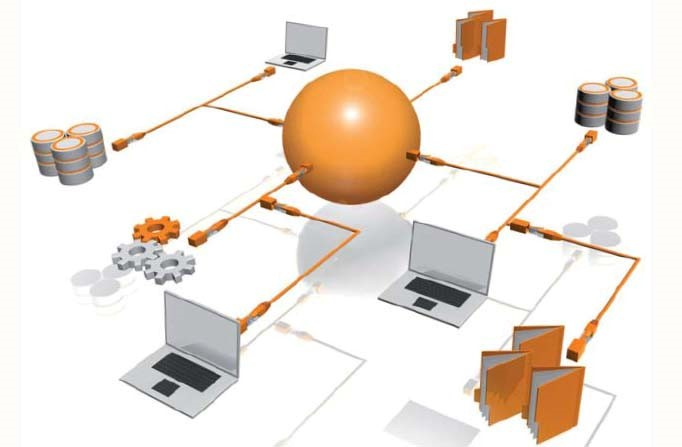
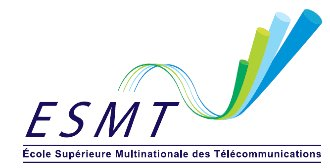
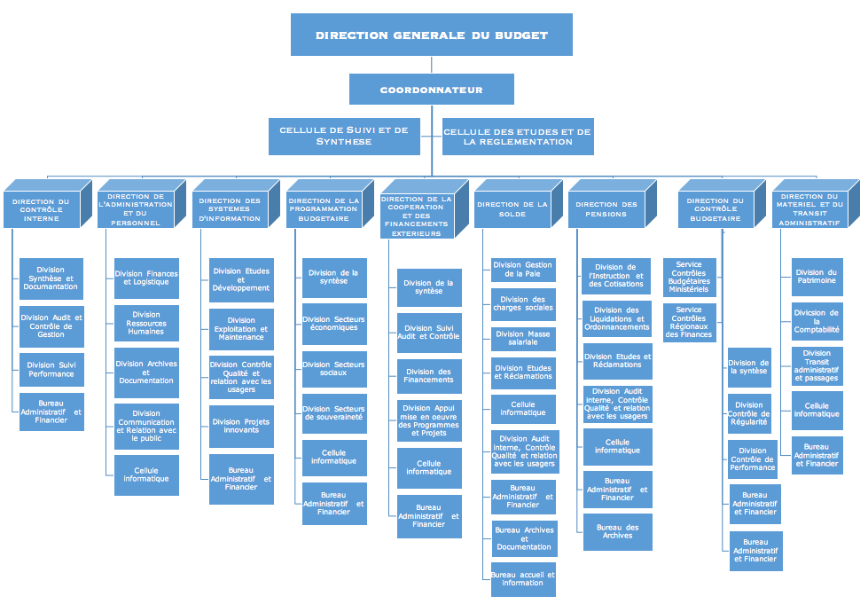

COMPETENCES
- HTML/CSS, JavaScript et PHP
- Réseau, Art-Télécommunication
- Programmation Java
- Maintenance informatique
- Base de données
- Sécurité Réseau

ESMT-IGIT2(Ingénieur Informatique et Télécom deuxième année)
Dévéloppement Web (PHP, Javascript...)
- Intégration Web Objectif:
- Créer ou modifier des pages HTML
- Utiliser les styles CSS
- Découvrir les nouveautés du HTML 5
- Programmation côté client
- Notions de base du langage JavaScript
- Les objets JavaScript
- La programmation événementielle
- Le DOM
- jQuery
- Ajax
- Programmation côté serveur
- Interface PHP/MySQL
Cours de Programmation Orientée Objet JAVA
- Module 1 :Introduction à Java
- Module 2 :Techniques de base du langage
- Module 3 :Les types primitifs
- Module 4 :Les structures de contrôle
- Module 5 :Programmation Orientée Objet
- Module 6 :Les chaînes de caractères
- Module 7 :Les tableaux
- Module 8 :L’héritage
- Module 9 :Gestion des exceptions
- Module 10 :Threads
- Module 11 :Les Swing GUI
- Module 12 :Entrées Sorties
- Module 13 :Collections et algorithmes
- Module 14 :Applets
- Module 15 :JDBC
Network ServicesArchitecture C/S Implémentation
- Objectifs Pédagogiques
- Connaître le modèle Client/Serveur(90% des applications de l’Internet)
- Avoir des notions de conception des services/applications Client/Serveur
- Connaître les protocoles applicatifs de l’Internet et savoir mettre en place les services associés sous Linux et ou sous Windows Server
- Démarche pédagogique basée sur:
- Présentations, Exposés, Coaching
- Autonomie et travail personnel
- Pratique: Simulation, Installation et Gestion des Services.
- Partie 1 :Principe de Base de l’Architecture Client/Serveur
- Partie 2 :Services Réseaux sur TCP/IP et Implémentation
Modélisation des bases de données et outils
- Introduction aux modèles de données
- Modélisation MERISE
- Modélisation UML
- Algèbre relationnelle
- Le langage SQL
- Les procédures stockées et déclencheurs sous MySQL
- Introduction à l’administration de bases de données MySQL
Systèmes de Transmissions
- PDH (Plesiochronous Digiatal Hierachy):
- RAPPELS SUR LA TRANSMISSION
- OBJECTIFS DE LA PDH
- NORMES PDH
- MULTIPLEXGAGE ET DEMULTIPLEXAGE DES SIGNAUX PDH
- TRAMES PDH
- FONCTIONS AUXILIAIRES
- SDH (Synchronous Digiatal Hierachy):
- LIMITE DE LA PDH
- OBJECTIFS DE LA SDH
- NORMES SDH
- MULTIPLEXGAGE ET DEMULTIPLEXAGE DES SIGNAUX SDH
- TRAMES SDH
- INTERFACES SDH/OPTIQUES
- EQUIPEMENTS SDH
- ARCHITECTURES SDH
- PROTOCOLES DE PROTECTIONS
Accès Hauts Débits
- LES LIAISONS SPECIALISEES (LS) OU LIAISONS LOUEES
- LES TECHNOLOGIES xDSL
- LES COURANTS PORTEURS EN LIGNES (CPL)
LES COMMUNICATIONS PAR SATELLITE
- Fondements des communications par satellite
- Technologie de Station Terrestre
- PLANNING DU RESEAU ET ANALYSE DU BILAN DE LIAISONS
Analyse et conception de systèmes orientés objet
- Ingénierie du logiciel
- Principes et objectifs
- Modélisation avec UML(UnifiedModelingLanguage)
- Comprendre les concepts clés de l’approche orientée objet.
- Savoir aborder un problème en se basant sur une approche orientée objet.
- Maîtriser les principaux diagrammes UML qui permettent de concevoir un système orientéobjet.
Management entrepreneurial
- Le management dans un contexte d’opportunités et de changements
- L’entrepreneuriat et l’entrepreneur
- Situations de départ pouvant pousser l’entrepreneur à créer son entreprise.
- Etudier le marché
- Les formes entrepreneuriales
- Cycle de vie du produit et stratégies entrepreneuriales
- Vision entrepreneuriale : rôles et caractéristiques.
- La création d’entreprise: un projet organisé
Gestion de projet
- PREMIÈRE PARTIE: GUIDE DU CORPUS DES CONNAISSANCES EN MANAGEMENT DE PROJET
- INTRODUCTION
- Présentation et objectif
- Éléments fondamentaux
- ENVIRONNEMENT DU PROJET
- Présentation
- Facteurs environnementaux de l’organisation
- Actifs organisationnels
- Systèmes de l’organisation
- LE RÔLE DU CHEF DE PROJET
- Présentation
- Définition du chef de projet
- La sphère d’influence du chef de projet
- Compétences du chef de projet
- Intégration
- GESTION DE L’INTÉGRATION DU PROJET
- Élaborer la charte du projet
- Élaborer le plan de management du projet
- Diriger et gérer le travail du projet
- Gérer les connaissances du projet
- Maîtriser le travail du projet
- Maîtriser les changements
- Clore le projet ou la phase
- GESTION DU PÉRIMÈTRE DU PROJET
- Planifier la gestion du périmètre
- Recueillir les exigences
- Définir le périmètre
- Créer le WBS
- Valider le périmètre
- Maîtriser le périmètre
- GESTION DE L’ÉCHÉANCIER DU PROJET
- Planifier la gestion de l’échéancier
- Définir les activités
- Organiser les activités en séquence
- Estimer la durée des activités
- Élaborer l’échéancier
- Maîtriser l’échéancier
- GESTION DES COÛTS DU PROJET
- Planifier la gestion des coûts
- Estimer les coûts
- Déterminer le budget
- Maîtriser les coûts
- GESTION DE LA QUALITÉ DU PROJET
- Planifier la gestion de la qualité
- Gérer la qualité
- Maîtriser la qualité
- GESTION DES RESSOURCES DU PROJET
- Planifier la gestion des ressources
- Estimer les ressources des activités
- Obtenir les ressources
- Développer l’équipe
- Gérer l’équipe
- Maîtriser les ressources
- GESTION DES COMMUNICATIONS DU PROJET
- Planifier la gestion des communications
- Gérer les communications
- Maîtriser les communications
- GESTION DES RISQUES DU PROJET
- Planifier la gestion des risques
- Identifier les risques
- Effectuer l’analyse qualitative des risques
- Effectuer l’analyse quantitative des risques
- Planifier les réponses aux risques
- Exécuter les réponses aux risques
- Maîtriser les risques
- GESTION DES APPROVISIONNEMENTS DU PROJET
- Planifier la gestion des approvisionnements
- Procéder aux approvisionnements
- Maîtriser les approvisionnements
- GESTION DES PARTIES PRENANTES DU PROJET
- Identifier les parties prenantes
- Planifier l’engagement des parties prenantes
- Gérer l’engagement des parties prenantes
- Maîtriser l’engagement des parties prenantes
- DEUXIÈME PARTIE: LE STANDARD POUR LE MANAGEMENT DE PROJET
- INTRODUCTION
- GROUPE DE PROCESSUS D’INITIALISATION
- GROUPE DE PROCESSUS DE PLANIFICATION
- GROUPE DE PROCESSUS DE PLANIFICATION
- GROUPE DE PROCESSUS DE MAITRISE
- Maîtriser le projet
- Maîtriser les changements
- Valider le périmètre
- Maîtriser le périmètre
- Maîtriser l’échéancier
- Maîtriser les coûts
- Maîtriser la qualité
- Maîtriser les ressources
- Maîtriser les communications
- Maîtriser les risques
- Maîtriser les approvisionnements
- Maîtriser l’engagement des parties prenantes
- GROUPE DE PROCESSUS DE CLOTURE
- TROISIÈME PARTIE: ANNEXES, GLOSSAIRE ET INDEX
ESMT-IGIT1(Ingénieur Informatique et Télécom première année)
Langage C
- Concepts fondamentaux
- Qu’est ce qu’un programme ? un bon programme
- Présentation du Langage C
- La syntaxe du langage
- Les structures de contrôle
- ...
- Concepts avancés
- Les fonctions
- Les arguments de la fonction main
- Les macros et la compilation conditionnelle
- Les structures de données ( struct et typedef
- Les listes chaînées
- Les piles et les files
- Les fichiers séquentiels
- Les bibliothèques statiques (.a)
- Les bibliothèques dynamiques (.dll)
ART-Trafic et Qos
- HISTORIQUE DES TELECOMMUNICATIONS
- La communication
- Les télécommunications
- La transmission de la voie
- Le télégraphe optique
- Le télégraphe électrique
- Le téléphone
- Les centraux téléphoniques
- LES RESEAUX DE TELECOMMUNICATION FIXES
- Le réseau téléphonique commute
- Le Réseau Numérique à Intégration de Services
- LES RESEAUX DE TELECOMMUNICATIONS MOBILES
- Réseaux mobiles de première génération (1 G)
- Réseaux mobiles de deuxième génération (2 G)
- ...
- LE RESEAU INTELLIGENT
- Concept du RI
- Architecture d’un réseau RI
- ARCHITECTURE DES RESEAUX DE NOUVELLES GENERATIONS NGN
- Concept des réseaux de nouvelles générations
- Architecture des NGN
BTNU (BASES DE LA TRANSMISSION NUMERIQUE) & EGT (ELEMENTS GENERAUX DE TRANSMISSION)
- Objectif BTNU
- Maitriser les termes de base en transmission
- Maitriser les étapes de la numérisation des signaux
- Etre capable d’expliquer les techniques d’adaptation des signaux
- Etre capable d’expliquer les techniques de multiplexage
- Maitriser le codage en ligne des signaux
- Objectif EGT
- Maitriser les familles de supports de transmission
- Maitriser le fonctionnement des supports éléctriques
- Maitriser le fonctionnement des supports luminuex
- Maitriser le fonctionnement des supports éléctromagnetiques
- Etre capale de realiser l’ingenierie de transmission (bilan de liaisons) des supports éléctriques et lumineux
- Etre capable de choisir un support en fonction des besoins réels
TCP/IP
- Partie1 présente
- les bases de la communication et comment les réseaux ont bouleversé notre quotidien.
- Les concepts : réseaux, données, LAN, WAN, QoS, sécurité, services de collaboration réseau et exercices Packet Tracer.
- Partie2 est axé
- Sur la manière dont les réseaux sont conçus et utilisés.
- Les modèles OSI et TCP/IP, processus d’encapsulation des données.
- Partie3 présente
- la couche supérieure du modèle réseau, à savoir la couche application.
- Partie4 présente
- la couche transport et se concentre sur la manière dont les protocoles TCP et UDP s’appliquent aux applications courantes.
- Partie5 présente
- la couche réseau OSI. Vous examinerez les concepts d’adressage et de routage, et acquerrez des connaissances sur la détermination des chemins d’accès, sur les paquets de données et le protocole IP.
- Partie6 presente
- l’adressage de réseau dans les détails, et comment utiliser un masque d’adresse, ou longueur de préfixe, pour déterminer le nombre de sous-réseaux et d’hôtes dans un réseau.
- Partie7 aborde les services fournis par
- la couche liaison de données. L’accent sera mis sur les processus d’encapsulation qui se produisent lorsque les données transitent sur un réseau local et un réseau étendu.
COMPTABILITE GENERALE
- L’analyse des opérations
- L’organisation comptable
- Evaluation des stocks et la facture
ECONOMIE
- ...
Math2 ( Files D'attente )
- ...
MATH3 (Calcule Numerique)
- ...
Theorie et Traitement du Signal (TTS)
- ...
Archithecture des ordinateurs
- ...
Anglais
- ...
.......................
MINISTERE DE L’ECONOMIE, DES FINANCES
ET DU PLAN
Direction des systèmes d’information(DGB)
Missions et attributions de la DGB
- Programmation et recherche de financements extérieurs
- Élaboration des documents portant définition du cadre de coopération avec les partenaires techniques et financiers
- Gestion des dépenses d’investissement financées sur ressources extérieures
- Suivi et mobilisation des financements extérieurs
- Dans le domaine de la gestion de la solde et des pensions de retraite
- Suivi des effectifs et contrôle de l’évolution de la masse salariale
- Étude des textes législatifs et réglementaires portant sur les dépenses de personnel
- Suivi de la politique nationale de protection sociale
- Recherche, étude et mise en place d’un système moderne de gestion des retraites
- Liquidation des droits, des pensions et des rentes des personnels civils et militaires de l’État
- Dans le domaine de la gestion du matériel et de l’équipement administratif
- Gestion de l’acquisition du matériel et mobilier de bureau ainsi que du mobilier d’appartement et des véhicules administratifs
- Coordination et contrôle de toutes les opérations de comptabilité des matières effectuées au sein des structures de l’État
- Établissement des réquisitions et feuilles de déplacement des agents de l’État
- Dans le domaine de la gestion de l’information et des systèmes d’information
- Définition, suivi et exécution des orientations de la DGB en matière informatique
- Gestion technique du site internet et collecte des informations devant y être publiées
- Administration du réseau, des systèmes d’exploitation, des bases de données et des serveurs
- Définition d’une politique de communication
- Gestion et organisation de la documentation administrative
- Dans le domaine du suivi, de la réglementation et de l’audit interne
- Suivi et application des directives adressées aux directions
- Réalisation d’études approfondies sur les problématiques budgétaires
- Étude préalable des projets d’actes législatifs et réglementaires ainsi que des
- Audit des services et évaluation ex post des plans, projets, programmes et réformes mis en œuvre à la Direction générale
- Dans le domaine de la gestion des ressources
- Mise en œuvre d’une stratégie de gestion des ressources humaines
- Mise en œuvre d’une stratégie de gestion des ressources humaines
- Administration et gestion des crédits et des moyens matériels mis à la disposition de la Direction générale
- Mise en place de dispositifs d’accueil et d’orientation
Organigramme détaillé
CFPT-IIR(Informatique Industrielle & Réseau)
- HTML/CSS
- Réseau
- Langage C
- Maintenance informatique
- Base de données